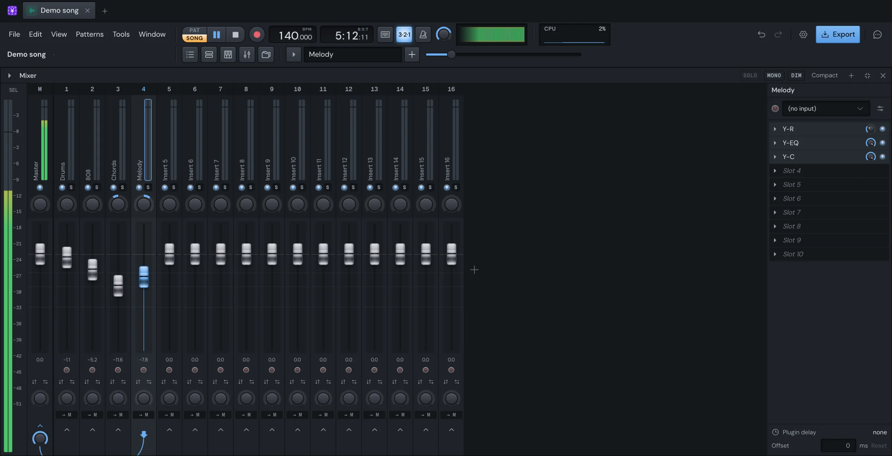

Mix
Built-in effects
Yen Studio comes with its own effects: an EQ, compressors, a limiter, a reverb, a delay and a few that move pitch, time and the stereo field. They live in the Mixer's effect slots, the same as your plugins, and their settings are saved in the song, so ⌘Z undoes a knob turn like any other edit.

Put an effect in a slot
- Open the Mixer and click the track you want the effect on.
- In the Inspector on the Mixer's right, click an empty slot (it reads Slot 1, Slot 2 and so on), or the arrow beside it.
- Pick an effect. The built-in ones come first, under Built in; then the plugins you've starred, under Starred; then the rest of your plugins, by kind or maker.
A built-in effect opens its window as soon as you pick it. The window's title says the effect and the track it's on, for example Y-C (Vocals).
Work with a loaded slot
A slot with an effect in it shows the effect's name, a small mix knob and a light.
- Click the name to open or close the effect's window.
- Click the light to bypass the effect, and again to turn it back on.
- Turn the mix knob to blend the effect with the dry sound: 100% is all effect, 0% none. It's the slot's own blend, on top of any mix control inside the effect.
- Scroll over a slot to move it up or down the chain.
- Drag an effect onto another slot to swap them, or onto another track's strip to move it there. Hold ⌘ (or ⌥) as you drop it to copy it instead.
Right-click a slot, or click its arrow, for its menu:
| Item | What it does |
|---|---|
| Open its window | Opens the effect's window. |
| Replace… | Opens the picker to put another effect in this slot. |
| Bypass / Enable | Turns the effect off or on. |
| Sidechain input | Picks the track this effect listens to as its key. Only effects that use a key show it. See Sidechain. |
| Move up / Move down | Moves the effect along the chain. |
| Delete | Takes the effect out of the slot. |
Y-EQ, Y-C, Y-L and Y-R can listen to a key; the others don't, so their menu has no Sidechain input.
What every built-in window shares
Presets
Every built-in effect has presets. Most windows have a preset menu in their top bar with Previous preset and Next preset arrows either side, so you can step through them while the song plays. Once you change a setting, the preset's name dims or reads Custom, so you can tell you've moved away from it.
A/B
Y-EQ, Y-C, Y-L and Y-R hold two settings at once. Click A/B to switch between them, and Copy to copy the one you hear into the other. Set up A, copy it to B, change B, then flick between them to hear which is better.
Undo
The song's undo covers every effect: ⌘Z takes back a knob turn, a preset or a band. Y-EQ, Y-C and Y-L also have Undo and Redo buttons in their top bar. A drag is one undo step, however far it went.
Knobs
The knobs in each window work the way that window's guide says, but they share a right-click menu. It starts with Reset and Type in value…, then the automation items:
- Create automation clip makes an automation clip of the knob in the Playlist. See Automation.
- Edit clip name… opens a clip that already moves this knob.
- Follow track, Follow notes of and Link to let a track's level, a channel's notes or a modulator move the knob. See Modulators.
In song mode, an automated knob follows its curve. While you hold it, your hand wins; it goes back to the curve when you let go.
Automate "…"
Once you've touched a control in a built-in window, a button appears in the window's title bar: Automate "Threshold", or whichever control you touched last. Click it to make an automation clip of that control. It's the quickest way to automate: turn the knob you want, then click.
Latency
Some settings make an effect look ahead, which delays its sound a little (a linear-phase EQ, a limiter's lookahead, oversampling). The window says how late it plays, in milliseconds, and the Mixer delays everything else to match, so the song stays in time. The Plugin delay and Offset at the foot of the Inspector show and adjust this per track.
The effects
| Effect | What it is |
|---|---|
| Y-EQ | An EQ. Drag bands right on the curve, over a live analyser. Any band can go dynamic. |
| Y-C | A compressor that shows its curve and the gain moving. Key it from any track. |
| Y-L | A limiter with true peak, a clip stage and loudness meters. |
| Y-R | A reverb: plates, rooms, chambers and halls, each in an era, with a decay you shape across the bands. |
| Y-Delay | Analog and tape echo: single, dual, ping-pong or rhythm. |
| Y-Multiband | Upward and downward compression on three bands. |
| Y-Time | Repeats, gates and tape stops as envelopes you draw, in time with the song. |
| Y-Tune | Pitch correction with a live pitch graph. It can detect the key. |
| Y-Pan | Moves a sound across the stereo field, on patterns or an LFO. |
| Y-Pitch | Two wheels, pitch and timbre, that swing back with gravity and inertia. Play them from the keys or MIDI. |
Something here wrong or missing? Tell us.